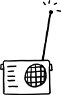

İkiyüzlü bir kimyası var köpüğün. İlk bakışta şeffaf sanki. Oysa bir duvar kalınlığıyla perde çekebiliyor ötesine; göstermiyor ardındakini, saklı niyetlerini. Hiçbir şeyi kaplamaya niyeti yokmuş gibi davranırken, pekâlâ kaplıyor aslında; boğmuyormuş gibi yaparken, usul usul boğuyor altında kalanları. Kale almamaya, ciddiye almamaya gelmiyor köpüğün kimyası; çünkü sulandıkça, sulandırıldıkça çoğalıyor. Kaldığım kampüs, sırasıyla feminizm, eşcinsel hareket, siyah hareketi, Üçüncü Dünya muhalefeti, sosyalizm ve ardından da anarşizm sularına demir atmışların hayli güçlü ve zinde olduğu bir yer. Ortalama Amerikalı profilinden hızla uzaklaşanların penahı. Ama kampüsün birkaç adım dışına çıktığınızda soluduğunuz hava değişiyor, ağırlaşıyor. Fazla uzak değil, sadece bir kasaba öteden tüm civara gece gündüz yayın yapan ve belli ki hayli revaçta olan radyo istasyonları var. Onlar kampüs sınırlarını aşarak yapıyorlar yayınlarını; dalga dalga, köpük köpük. Her akşam aynı saatte çıkıyor Bob, bitmez tükenmez bir enerjiyle geçiyor mikrofonun başına. Bob'a gelene kadar, üç aşama var geçilmesi gereken. Önce bir borsa uzmanı çıkıp telefonlarını kilitleyen tütün çiftçilerine ve orta sınıf ev hanımlarına paralarını ne zaman nereye yatıracaklarına dair tavsiyelerde bulunuyor. Tavsiye kelimesi hafif kaçıyor onu dinleyince. "Dediklerimi yapmanızda fayda görüyorum"dan ziyade, "Dediklerimi yapmazsanız aptalsınız demektir" mesajını veriyor alttan alta. Borsacının ardından Eleanor çıkıyor şen şakrak, cıvıldayarak. Her programdan önce, büyük bir sır verircesine aynı cümleyi zikrediyor: "Benim dinleyicilerimin kadınlardan oluştuğu doğru. Ama ben erkeklerin de beni dinlediğini çok iyi biliyorum. Hadi beyler utanmayın, saklamayın. Bu program hepimize!"
Eleanor gününe göre, "Modaya göre değil, yaşınıza göre giyinin", "Kış yaklaşırken acaba hangi desenler moda?", "Başkalarından öğrenecek ne çok ders var", "Aman, başkası olmaya kalkmayın, siz siz olun önce kendiniz olun", "11 Eylül olayları hepimize hayatımızın kıymetini bilmeyi ve her yeni güne gülümseyerek başlamayı öğretti", "Ulusal kahramanlarımız için her gün yas tutmazsanız, onların ölümü anlamını yitirir" türünde çelişkili başlıklar taşıyan uzun konuşmalar yapıyor. Programı zırt pırt reklamlarla kesildiği için ne kadar sürdüğünü saptamak güç. Ama o biter bitmez, akşamdan bu yana üst üste bunca zırvayı dinlemekten pelteleşe pelteleşe en nihayetinde sütlaç kıvamına ermiş beyinlere hitaben, Bob geliyor mikrofonun başına.
Ayrımcılığın her türünün diğer ayrımcılık türleriyle nasıl da sıkı sıkıya bağlantılı olduğunu görmezden gelenler, bir kez olsun Bob'un programına kulak vermeliler. Konuştukça kendi kendini kışkırtmayı başardığından, daha beş dakika geçmeden öfkeleniveriyor Bob. Öfkelendikçe köpürdüğünden, köpürdükçe de gözü kimseyi görmediğinden, eşcinsellere söylenerek başladığı bir konuşmayı, Arapları aşağılayarak tamamlayabiliyor; komünizmin kılık değiştirmiş hallerini tespit ederken, birdenbire evlilikdışı cinsel ilişkinin genç kızlara verdiği zararlardan dem vurabiliyor.
Bob'un en çok sevdiği şey telefon bağlantısıyla kendisini arayanları ebleh yerine koymak, telefon bağlantısıyla Bob'u arayanların en çok sevdiği şey de onun tarafından ebleh yerine konmak olunca, sado-mazo diyaloglar açıyor her akşam radyoda.
Arayan kişi maazallah "Ama tecavüze uğrayan bir kadının o çocuğu aldırmaya hakkı olabilir. Yani ben de kürtaja kesinlikle karşıyım ama hani tecavüz durumunda..." deme gafletinde bulunursa, Bob Amcası körük körük, köpük köpük koşuyor çıkan yangına. Arayanın sözünü kestiği gibi, 15 dakika boyunca susmadan vaaz veriyor. İncil'den yaptığı alıntıları, kendi sefil hayat tecrübesinden çıkardığı derslerle destekleyerek. Her programını aynı biçimde bitiriyor Bob. Yapmacık yetişkinlerin, öğrenme kapasitesini şüpheli gördükleri, ama gene de sevmek istedikleri bir çocuk karşısında takındıkları merhamete bulaşmış şefkatle, heceleri birbirine ekleyerek soruyor: "De-mek-ki-ne-yap-ma-ya-cak-mı-şız?" Telefonun öbür ucundaki dinleyici, "her zaman her koşulda kürtaja karşı olmalıymışız" diye tamamlıyor lafı; daha önceki hatasından ötürü ezik, ama sorulan sorunun cevabını bilmekten ötürü mutlu, "iyi geceler" diliyor Bob'a.
Bob'un programı, sistem muhaliflerinin aktif ve çoğunlukta olduğu kampüse yayın yapıyor her akşam sebatla; kâfirlere savaş açmış ya akıyor dalga dalga. Hedef öğrenci ve öğretmenlerin çoğu dalga geçiyor onunla. Oysa ciddiye almamaya gelmiyor Bobları ve Eleanorları; çünkü sulandıkça, sulandırıldıkça çoğalıp yayılıyor köpüğün kimyası.
Boston